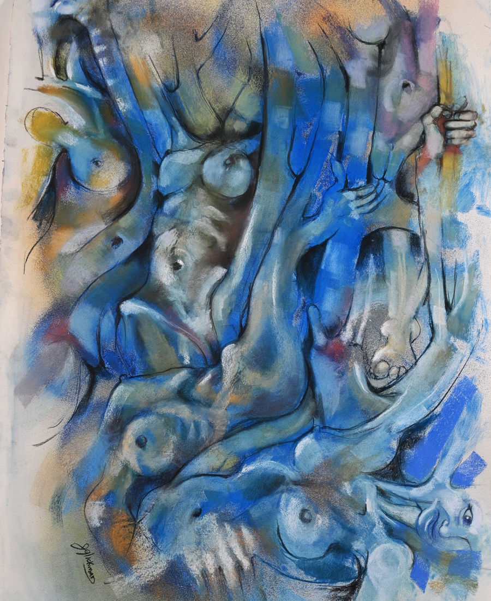
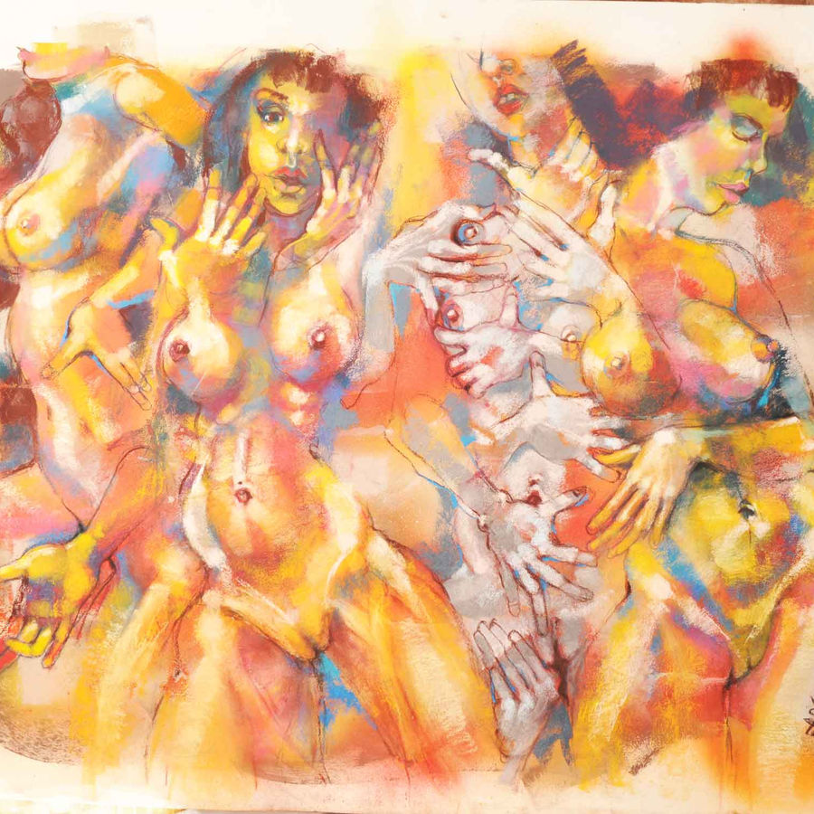
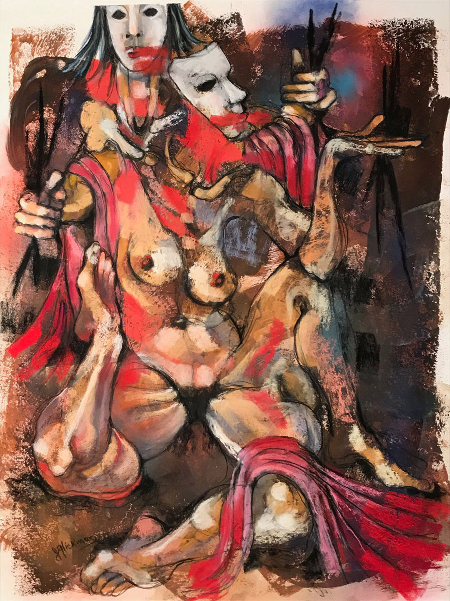
Painter · Sculptor · Educator · Boynton Beach, FL
Figurative & Abstract Expressionist
Works in oil, mixed media & sculpture
Ed.D. · Lynn University Faculty
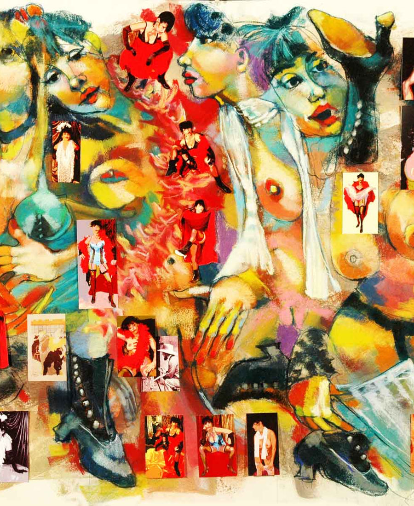
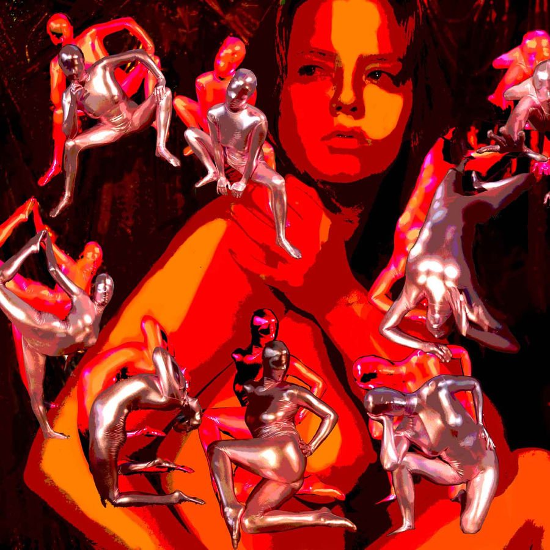
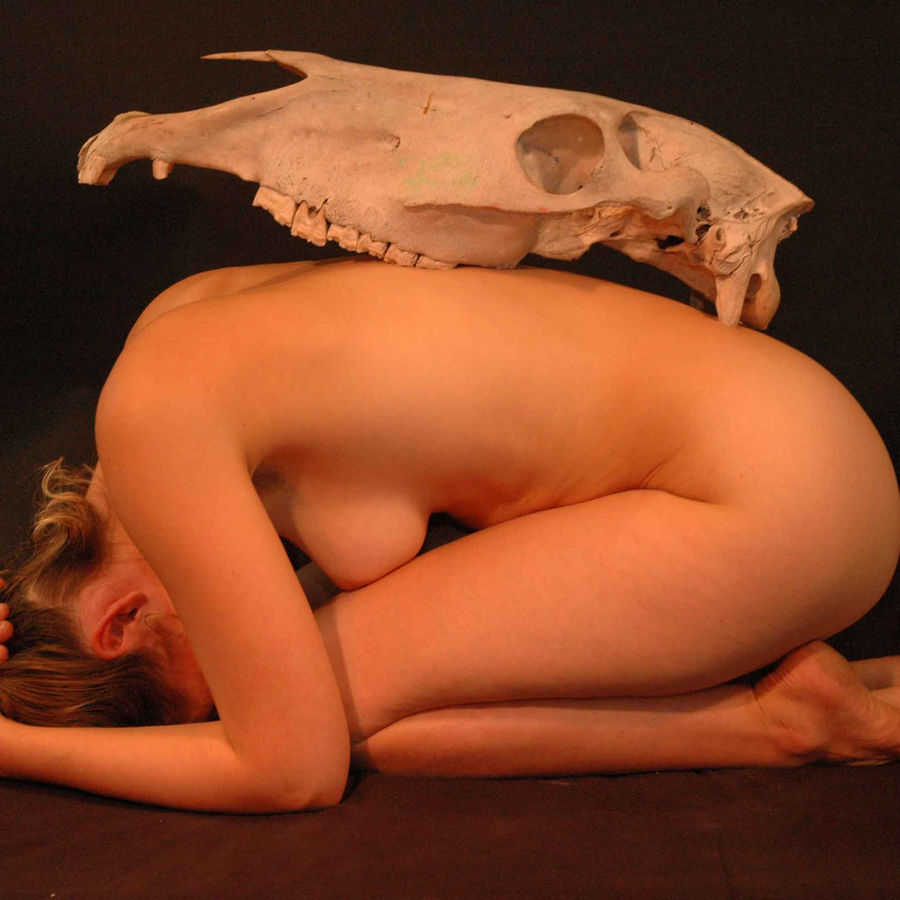
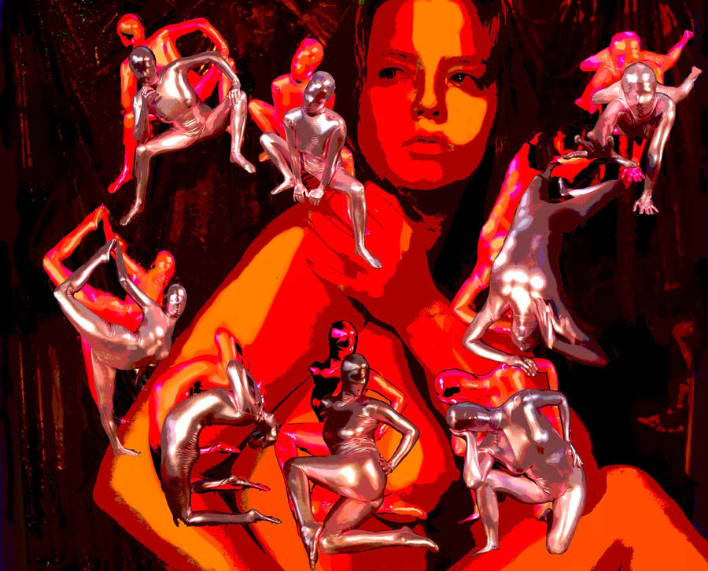
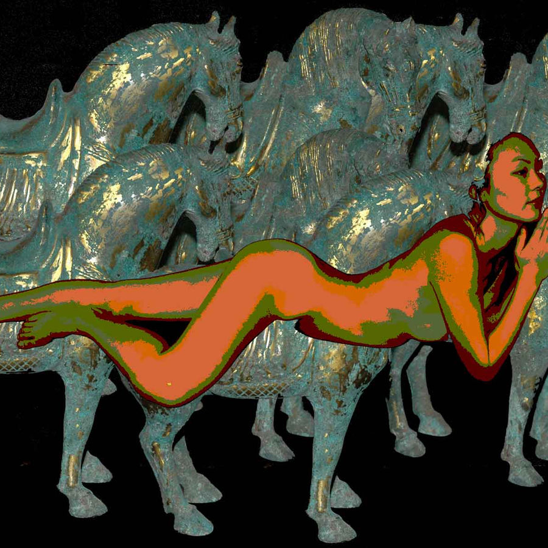
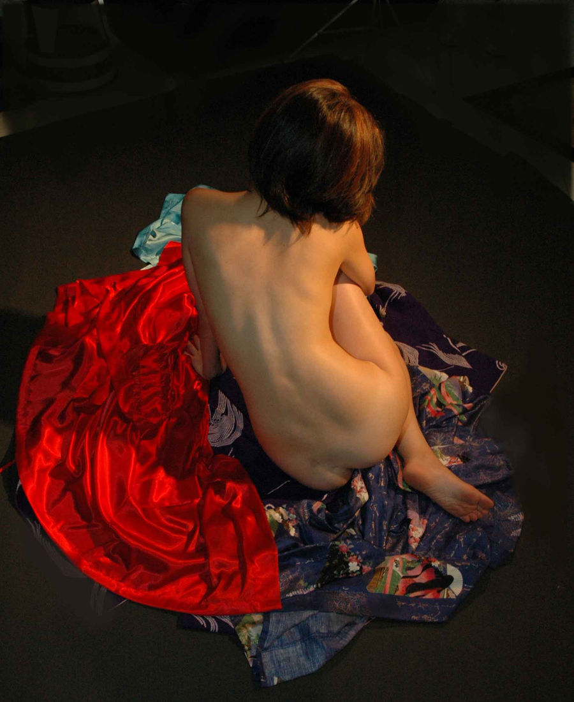
"Glickman works across the boundaries of figuration and abstraction, weaving personal narrative into every surface."
Working in oil, acrylic, collage, and assemblage, Jerome Glickman's mixed media practice collapses the distance between painting and sculpture. Each work is built up in layers — material as memory, surface as history.
Based in South Florida, his studio practice draws from life drawing sessions at the Art Students League and decades of teaching visual thinking at Lynn University and the Digital Media Arts College in Boca Raton.
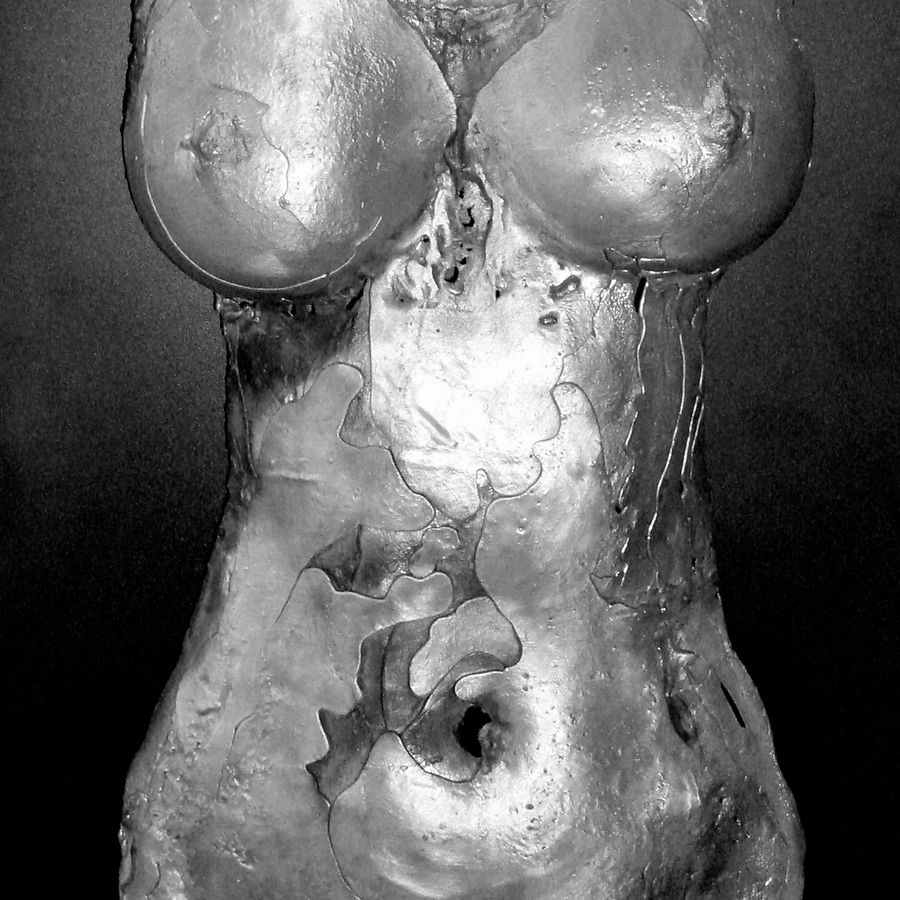
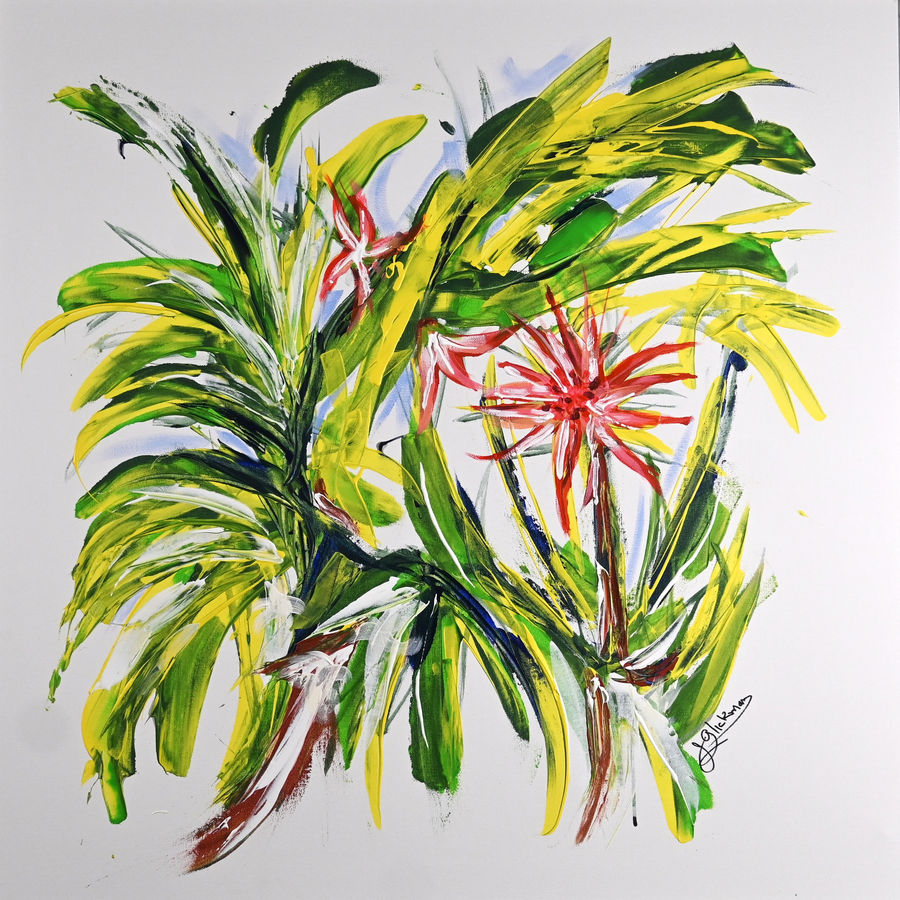
Award Winner · Boca Raton, FL
Award Winner · Florida Atlantic University
Selected Works · Boynton Beach, FL
Life Member — New York / South Florida
Available for studio visits · Boynton Beach
Advanced studies in visual art and education
Boca Raton, FL — Fine Arts
Adjunct Faculty · Boca Raton, FL
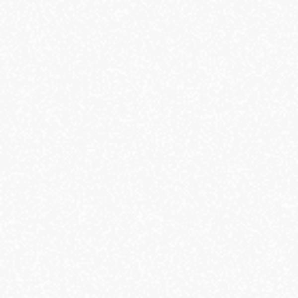
Painter · Sculptor · Educator · South Florida
Working across painting, mixed media, photography, and sculpture, Jerome Glickman builds a body of work grounded in the expressive tradition and shaped by decades of teaching, life drawing, and community engagement. His canvases move between the figurative and the abstract — between representation and raw gesture.
Glickman holds a Doctor of Education and serves as adjunct faculty at Lynn University and the Digital Media Arts College in Boca Raton, where he brings the same rigor he applies to his studio practice into the classroom. A life member of the Art Students League, his work has been recognized at the Boca Museum of Art and FAU Library Gallery.
Artist Statement
"I am drawn to the figure not as a subject to be depicted, but as a vehicle for feeling — the intersection of what is seen and what is felt, what is remembered and what escapes language."
— Jerome T. Glickman, Ed.D. · Boynton Beach, FL
Original works, collector inquiries, and institutional commissions welcome. Studio visits available by appointment in Boynton Beach.
Begin a ConversationCommission inquiries, gallery proposals, speaking engagements, and collector questions welcome. All correspondence handled personally.
jgvisionquest@gmail.com 561-704-5297 @glickmanjeromeBoynton Beach / Delray Beach, FL
Lynn University · Digital Media Arts College
Boca Raton, FL
Art Students League — Life Member
Available by appointment
Site design concept by Lucas Blatt — lucasblatt197703@gmail.com